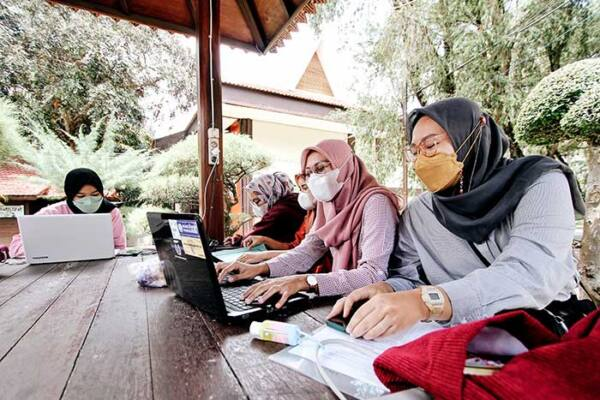
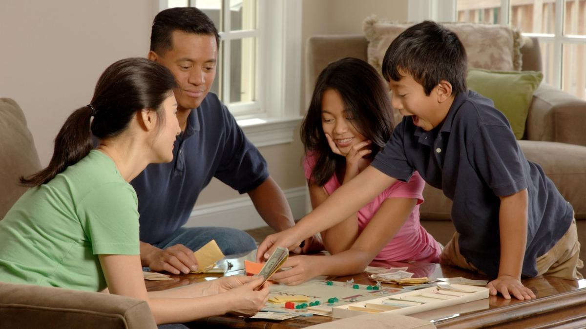

Aktivitas Harian
Rutinitas harian dari pagi hingga malam hari
Aktivitas Harian Saya
Hover pada kartu untuk melihat detail aktivitas di setiap waktu.

Pagi Hari
06:00 – 07:30
Sarapan & Mandi
Setelah shalat shubuh dilanjutkan dengan mandi kemudian baru sarapan pagi.
Shalat Shubuh
Mandi pagi
Sarapan bergizi

Siang Hari
09:00 – 16:00
Masuk Kampus
Belajar di lingkungan kampus sesuai dengan mata kuliah yang telah diambil.
Perkuliahan
Diskusi kelompok
Praktikum

Sore Hari
16:00 – 19:00
Waktu Keluarga
Waktu istirahat setelah seharian di kampus dan bersama keluarga.
Istirahat
Quality time keluarga
Makan malam bersama

Malam Hari
19:00 – 22:00
Pengembangan Diri
Belajar mandiri dan merencanakan kegiatan esok hari.
Belajar mandiri
Review materi
Persiapan esok hari
Istirahat / tidur